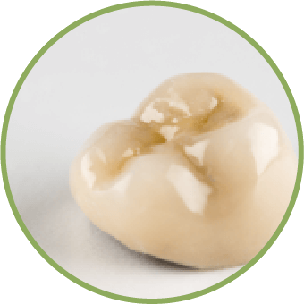

根管治療
根管治療 Root canal treatment
牙齒的組成大致分為最外層的琺瑯質、中層的象牙質、及最內層的牙髓質，牙髓質中包含神經、血管、淋巴及其他的組織成分，若琺瑯質或象牙質遭到侵害，細菌便會經由此漏洞向內進攻牙髓，造成牙髓的病變，此時便需要根管治療進行牙髓組織的清創，也就是人們俗稱的「抽神經」，目標為恢復牙根周圍組織的健康並保留牙齒。
顯微輔助治療
Microscopic root canal treatment
「你們牙科治療，也有在用顯微鏡喔？」
其實牙齒的構造非常精密且複雜，以往的根管治療大多依賴醫師的經驗與手感，容易因視野死角而導致有些感染區域未徹底清潔，有了顯微鏡輔助根管治療後，牙醫師能夠看得更清晰、治療得更準確！向日葵採用德國光學大廠蔡司顯微鏡，當有根管太細找不到、阻塞、斷裂器械、根管穿孔等情況發生時，能以高達25倍的光學放大及銳利解析度，讓根管治療能夠更精準、更有效率的執行！
平凡而溫馨的生活，
讓疼痛不再打擾你。
平凡而溫馨的生活，
讓疼痛不再打擾你。
治療過程
根據個人的口腔狀況區別
基本上根管治療的過程大致分為以下幾個步驟：
Step1.—評估
根管治療前，醫師會先確認患者口腔內的蛀牙位置，才能制定根管治療的療程。

Step2.—麻醉
受影響的牙齒會視情況需要接受局部麻醉，適度的局部麻醉，讓病患在治療過程中不舒服的程度降至最低。
Step3.—清除
治療時多以細軟的橡皮布套在牙齒上，使牙齒在治療中能完全與唾液隔離，維持一個無菌的狀態，並清除根管內發炎或壞死的牙髓組織。
Step4.—填補
以特殊材料將根管做緊密的封填，因若僅是抽掉神經無法真正去除病源，唯有把神經根管完全密封才能杜絕日後再發病。
根管治療後的修復
After root canal treatment
根管治療後的牙齒失去了牙髓腔中神經、血管、淋巴等營養供應，使牙齒變得脆弱易斷，且根管過後的牙齒顏色會與正常牙齒有所不同，為了能更好的保護牙齒及自然的外觀，這時候醫師都會建議套上假牙牙冠，以免牙齒抽完神經後碎裂、最終走上拔除的命運。
與疼痛告別，
用笑容迎接健康到來。
與疼痛告別，
用笑容迎接健康到來。
-金屬牙冠-
全金屬製作，堅固且密合度佳，但顏色較不美觀，若使用便宜金屬常用的鎳可能會造成過敏，金屬離子的游離也可能對健康造成危害。
-金屬瓷牙冠-
以金屬為基底、外層燒附陶瓷的牙冠，比全金屬牙有較好的美觀效果，但因透光度不佳容易顯得死白且不自然，當受到過大的咬合力時發生斷裂的機率較高。
-全瓷牙冠-
高強度且透光性佳，能模擬自然牙的色澤及透明度，陶瓷材質與人體相容性極佳，不易造成人體過敏，是製作假牙牙冠時的最佳選擇。